14 Semantic Network Analysis
Semantic Network Analysis (SNA) is a method used to study and visualize relationships between words, concepts, or other entities based on their co-occurrences or semantic associations. It is primarily used in fields like linguistics, information science, sociology, and data analysis to explore how different terms or concepts relate to each other within a dataset, such as a collection of documents, speeches, or social media posts.
The basic idea of Semantic Network Analysis is to represent the relationships between words or concepts as a network or graph.
14.1 Overview
14.1.1 Key Concepts of Semantic Network Analysis:
- Nodes and Edges:
- The nodes in the network represent the concepts or terms you are analyzing.
- The edges represent the connections between these terms. These connections can be based on co-occurrences, shared meanings, or even statistical relationships like cosine similarity in word vectors.
- Centrality:
- Centrality measures like degree centrality or betweenness centrality indicate which terms or concepts are most connected or important in the network. These terms can serve as key concepts or hubs that link many other terms together.
- Communities or Clusters:
- SNA can help identify clusters or communities within the network, revealing groups of related terms or concepts that form cohesive sub-networks. These clusters can indicate topics or themes within a set of documents.
- Applications:
- Linguistics: It can be used to understand the structure of language and how words are related.
- Social Media Analysis: Identifies key themes, discussions, and influencers.
- Knowledge Management: Visualizes how knowledge is structured in documents or research articles.
14.1.2 Steps in Semantic Network Analysis:
Data Collection: You collect a dataset where relationships between concepts are apparent. This could be a corpus of text or a set of documents.
Text Preprocessing: This involves cleaning the text by removing stop words, punctuation, and irrelevant data. Stemming or lemmatization might also be performed to reduce words to their base forms.
Concept Extraction: You identify the key concepts or terms in the dataset, typically using techniques like term frequency-inverse document frequency (TF-IDF) or keyword extraction algorithms.
Building the Network: A co-occurrence matrix is built, where rows and columns represent words or concepts, and the cells represent the frequency with which those terms co-occur in the same context.
Network Visualization: You visualize the network using graph tools, where terms are represented as nodes, and their relationships (e.g., co-occurrences) are represented by edges.
Analysis: You can calculate network metrics (e.g., centrality, clustering) and examine sub-networks to derive insights into how terms are related and what the key concepts are.
14.2 Components
14.2.1 What is an Adjacency Matrix?
An Adjacency Matrix is a matrix representation of a graph, where the rows and columns represent the nodes (vertices) of the graph, and the matrix entries indicate whether pairs of nodes are adjacent (connected by an edge). It is a common way to represent graph data in mathematics, computer science, and network theory.
For a graph ( G = (V, E) ) where ( V ) is the set of vertices and ( E ) is the set of edges:
- If there is an edge between vertex ( i ) and vertex ( j ), the entry ( A[i][j] ) in the adjacency matrix is 1.
- If there is no edge between ( i ) and ( j ), ( A[i][j] ) is 0.
14.2.1.1 Types of Adjacency Matrices:
- For undirected graphs: The matrix is symmetric, i.e., if there is an edge between vertex ( i ) and vertex ( j ), both ( A[i][j] ) and ( A[j][i] ) are 1.
- For directed graphs: The matrix is not necessarily symmetric. ( A[i][j] = 1 ) only if there is an edge from vertex ( i ) to vertex ( j ).
- Weighted graphs: Instead of just 0 and 1, the entries in the matrix can represent the weight of the edges between vertices.
14.2.2 Example of an Adjacency Matrix
Consider the following simple undirected graph:
A -- B
| /
CThe graph has three nodes: A, B, and C. There are edges between A and B, A and C, and B and C. The adjacency matrix for this undirected graph would be:
A B C
A [0, 1, 1]
B [1, 0, 1]
C [1, 1, 0]14.2.3 Python Code to Create and Display an Adjacency Matrix
Below is a Python example to create and display an adjacency matrix using the numpy and networkx libraries.
import numpy as np
import networkx as nx
import matplotlib.pyplot as plt
# Create a graph
G = nx.Graph()
# Add nodes
G.add_nodes_from(['A', 'B', 'C'])
# Add edges (undirected graph)
G.add_edges_from([('A', 'B'), ('A', 'C'), ('B', 'C')])
# Get the adjacency matrix
adj_matrix = nx.adjacency_matrix(G).todense()
# Display the adjacency matrix
print("Adjacency Matrix:")
print(adj_matrix)
# Visualize the graph
nx.draw(G, with_labels=True, node_color='skyblue', edge_color='gray', node_size=1500, font_size=16)
plt.show()Output:
Adjacency Matrix:
[[0 1 1]
[1 0 1]
[1 1 0]]And the corresponding graph visualization will show the relationships between A, B, and C.
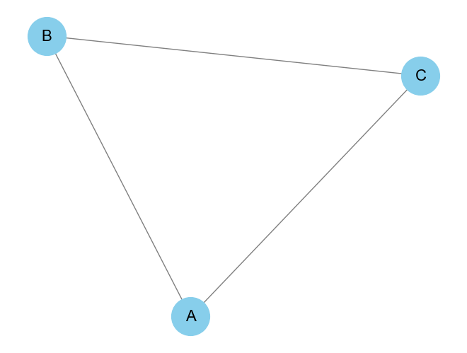
14.2.4 Modifying for Directed or Weighted Graphs
Directed Graph: You can use
nx.DiGraph()instead ofnx.Graph()to create a directed graph. In a directed graph, the edges will only be represented in one direction.G = nx.DiGraph() G.add_edges_from([('A', 'B'), ('C', 'A')]) # Directed edges # Get the adjacency matrix adj_matrix = nx.adjacency_matrix(G).todense() # Display the adjacency matrix print("Adjacency Matrix:") print(adj_matrix) # Visualize the graph nx.draw(G, with_labels=True, node_color='skyblue', edge_color='gray', node_size=1500, font_size=16) plt.show()
Output:
Adjacency Matrix:
[[0 1 0]
[0 0 0]
[1 0 0]]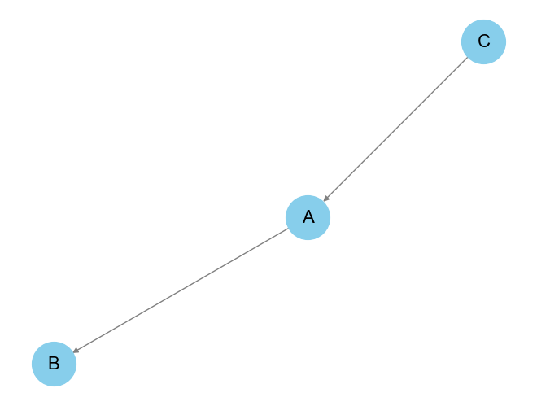
Weighted Graph: To handle weighted graphs, you can assign weights to the edges, and the adjacency matrix will reflect these weights.
import networkx as nx import matplotlib.pyplot as plt # Create a MultiGraph G = nx.MultiGraph() # Add nodes G.add_nodes_from(['A', 'B', 'C']) # Add multiple edges between nodes G.add_edge('A', 'B', weight=2) G.add_edge('A', 'B', weight=3) # Multiple edge between A and B G.add_edge('A', 'C', weight=4) G.add_edge('B', 'C', weight=1) # Print the edges along with their attributes print("Edges in MultiGraph with attributes:") print(G.edges(data=True)) # Visualize the MultiGraph pos = nx.spring_layout(G) nx.draw(G, pos, with_labels=True, node_color='lightblue', node_size=1500, font_size=16) # Create custom edge labels edge_labels = {} for (u, v, data) in G.edges(data=True): if (u, v) not in edge_labels: edge_labels[(u, v)] = str(data['weight']) else: edge_labels[(u, v)] += f",{data['weight']}" # Draw edge labels nx.draw_networkx_edge_labels(G, pos, edge_labels=edge_labels, font_size=12) plt.title("MultiGraph with Edge Weights", fontsize=16) plt.axis('off') plt.tight_layout() plt.show()In a weighted adjacency matrix, instead of
0and1, the matrix values will represent the weights of the edges.
Output:
Edges in MultiGraph with attributes:
[('A', 'B', {'weight': 2}), ('A', 'B', {'weight': 3}), ('A', 'C', {'weight': 4}), ('B', 'C', {'weight': 1})]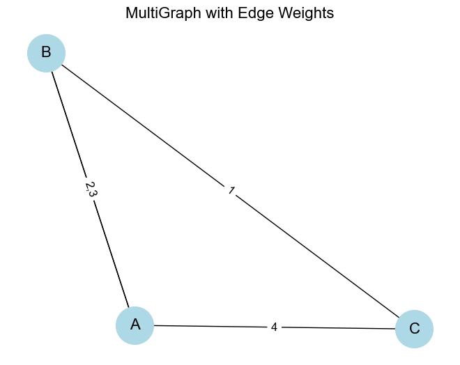
14.2.5 Centrality Measures in Graphs
Centrality measures are important in network analysis because they help identify the most important or influential nodes in a graph. Different centrality measures capture different notions of importance based on various graph properties. Below, we’ll explore some of the most common centrality measures, including Python code to calculate each one using the networkx library.
- Degree Centrality: How many direct connections a node has.
- Betweenness Centrality: How often a node lies on the shortest path between other nodes.
- Closeness Centrality: How close a node is to all other nodes in the network.
- Eigenvector Centrality: The influence of a node in the network, considering the centrality of its neighbors.
- PageRank: A variant of eigenvector centrality that ranks nodes based on incoming links from other important nodes.
14.2.5.1 Degree Centrality
Degree Centrality is the simplest form of centrality. It counts the number of edges connected to a node. In an undirected graph, this is simply the number of neighbors.
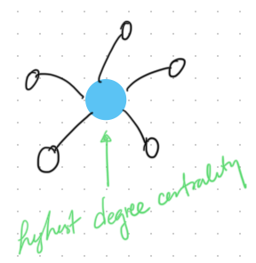
In a directed graph, it can be divided into:
- In-degree centrality: The number of incoming edges.
- Out-degree centrality: The number of outgoing edges.
\[\text{Degree Centrality of node } i = \frac{\text{Number of edges connected to node } i}{\text{Total number of possible edges}}\]
Python Code for Degree Centrality:
### Python Code for Degree Centrality:
import networkx as nx
import matplotlib.pyplot as plt
# Create a sample graph (based on your data or a custom graph)
G = nx.Graph()
# Add edges between nodes (example graph)
edges = [
('A', 'B'),
('B', 'C'),
('C', 'D'), ('C', 'E'),
('D', 'E')
]
G.add_edges_from(edges)
# Calculate degree centrality
degree_centrality = nx.degree_centrality(G)
print("Degree Centrality:", degree_centrality)
# Visualize the graph with node size proportional to degree centrality
node_size = [v * 3000 for v in degree_centrality.values()]
pos = nx.spring_layout(G)
nx.draw(G, pos, with_labels=True, node_size=node_size, node_color="lightblue")
plt.show()Output:
Degree Centrality: {'A': 0.25, 'B': 0.5, 'C': 0.75, 'D': 0.5, 'E': 0.5}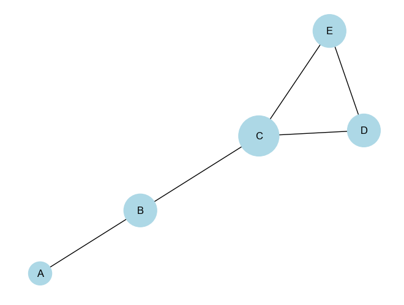
14.2.5.2 Betweenness Centrality
Betweenness Centrality measures the number of times a node lies on the shortest path between other nodes. Nodes with high betweenness centrality can control the flow of information in a network.
\[\text{Betweenness Centrality of node } i = \sum{\substack{s \neq i \neq t}} \frac{\sigma_{st}(i)}{\sigma_{st}}\]
Where:
\(\sigma_{st}\) is the total number of shortest paths from node \(s\) to node \(t\).
\(\sigma_{st}(i)\)is the number of shortest paths that pass through node \(i\).
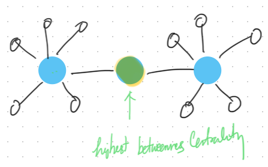
Python Code for Betweenness Centrality:
# Calculate betweenness centrality
betweenness_centrality = nx.betweenness_centrality(G)
print("Betweenness Centrality:", betweenness_centrality)
# Visualize the graph with node size proportional to betweenness centrality
node_size = [v * 3000 for v in betweenness_centrality.values()]
nx.draw(G, pos, with_labels=True, node_size=node_size, node_color="lightgreen")
plt.show()Output:
Betweenness Centrality: {'A': 0.0, 'B': 0.5, 'C': 0.6666666666666666, 'D': 0.0, 'E': 0.0}14.2.5.3 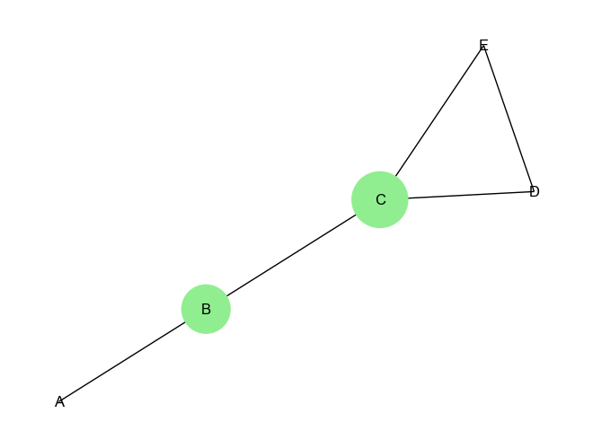
14.2.5.4 Closeness Centrality
Closeness Centrality measures how close a node is to all other nodes in the graph. Nodes with high closeness centrality can quickly interact with all other nodes in the network. Closeness Centrality is a centrality measure used to determine how efficiently information spreads from a given node to all other nodes in the network.
\[\text{Closeness Centrality of node } i = \frac{\text{number of nodes - 1}}{\sum{\text{distance from node $i$ to all other nodes}}}\]
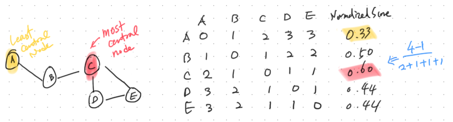
Python Code for Closeness Centrality:
mport networkx as nx
# Create a sample graph (based on your data or a custom graph)
G = nx.Graph()
# Add edges between nodes (example graph)
edges = [
('A', 'B'),
('B', 'C'),
('C', 'D'), ('C', 'E'),
('D', 'E')
]
G.add_edges_from(edges)
# Compute closeness centrality for each node
closeness_centrality = nx.closeness_centrality(G)
# Display the closeness centrality values
for node, centrality in closeness_centrality.items():
print(f"Closeness Centrality of node {node}: {centrality:.4f}")
# Visualize the graph with node size proportional to closeness centrality
node_size = [v * 3000 for v in closeness_centrality.values()]
pos = nx.spring_layout(G)
nx.draw(G, pos, with_labels=True, node_size=node_size, node_color="lightgreen")
plt.show()Output:
Closeness Centrality of node A: 0.4444
Closeness Centrality of node B: 0.6667
Closeness Centrality of node C: 0.8000
Closeness Centrality of node D: 0.5714
Closeness Centrality of node E: 0.5714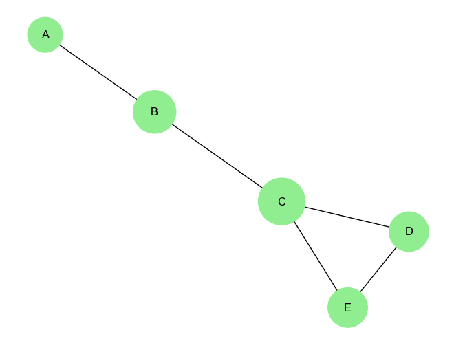
14.2.5.5 Eigenvector Centrality
Eigenvector Centrality measures the influence of a node in a network. Unlike degree centrality, which simply counts the number of connections, eigenvector centrality assigns more value to nodes that are connected to other highly connected nodes.
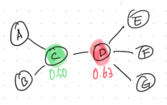
Why Use Eigenvector Centrality?
Eigenvector centrality is useful when you need to consider not just how many connections a node has, but also how influential its neighbors are. It is commonly used in applications like:
Social Networks: Identifying influential individuals who are connected to other influential individuals.
Web Search Algorithms: PageRank, a variant of eigenvector centrality, is used to rank web pages based on their importance.
Biological Networks: Identifying key genes or proteins based on their interactions with other important molecules.
For a node \(v\), the eigenvector centrality \(x_v\) is given by the following equation:
\[x_v = \frac{1}{\lambda} \sum_{u* \in N(v)}A_{vu}x_u\]
Where:
\(x_v\) is the eigenvector centrality of node \(v\).
\(\lambda\) is a constant (the largest eigenvalue of the adjacency matrix).
\(N(v)\) is the set of neighbors of node ( v ).
\(A_{vu}\) is the adjacency matrix where \(A_{vu} = 1\) if there is an edge between \(v\) and \(u\), and 0 otherwise.
Eigenvector centrality is a more nuanced measure of influence compared to simpler metrics like degree centrality, making it ideal for applications where connections to other influential nodes are particularly important.
Python Code for Eigenvector Centrality:
import networkx as nx
import matplotlib.pyplot as plt
# Create a sample graph
G = nx.Graph()
# Add edges between nodes (example graph)
edges = [
('A', 'C'),
('B', 'C'),
('C', 'D'),
('D', 'E'),
('D', 'F'),
('D', 'G')
]
G.add_edges_from(edges)
# Compute eigenvector centrality for each node
eigenvector_centrality = nx.eigenvector_centrality(G)
# Display the eigenvector centrality values
for node, centrality in eigenvector_centrality.items():
print(f"Eigenvector Centrality of node {node}: {centrality:.4f}")
# Visualize the graph with node size proportional to eigenvector centrality
node_size = [v * 3000 for v in eigenvector_centrality.values()]
pos = nx.spring_layout(G)
nx.draw(G, pos, with_labels=True, node_size=node_size, node_color="lightblue")
plt.show()Output:
Eigenvector Centrality of node A: 0.2299
Eigenvector Centrality of node C: 0.5000
Eigenvector Centrality of node B: 0.2299
Eigenvector Centrality of node D: 0.6280
Eigenvector Centrality of node E: 0.2887
Eigenvector Centrality of node F: 0.2887
Eigenvector Centrality of node G: 0.2887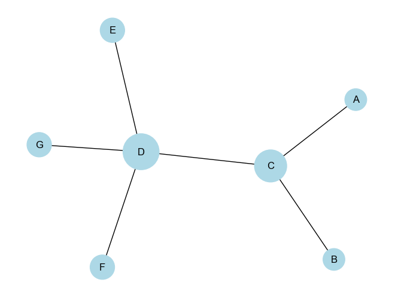
14.2.5.6 PageRank Centrality
PageRank is a centrality measure originally developed by Larry Page and Sergey Brin to rank web pages in Google’s search engine. It is a variant of Eigenvector Centrality, but with the addition of a damping factor, typically set to 0.85, that models the probability that a user will stop following links at any given point. This allows PageRank to rank the importance of nodes (e.g., web pages) not just based on the number of inbound links, but also based on the importance of the linking pages.
Why Use PageRank?
PageRank is a powerful measure of centrality that accounts for both the quantity and quality of connections to a node. It’s particularly useful in situations where:
Web Search: Ranking web pages based on the importance of the pages linking to them.
Citation Networks: Determining influential papers based on how often they are cited by other important papers.
Social Networks: Identifying influential individuals based on connections from other influential people.
Differences from Other Centrality Measures:
- Degree Centrality only counts the number of links to a node, whereas PageRank considers both the number and quality (importance) of those links.
- Eigenvector Centrality is similar to PageRank but lacks the damping factor, which prevents dead-end nodes from absorbing all the rank.
PageRank Centrality Formula
The PageRank of a node \(v\) is given by:
\[PR(v) = \frac{1-d}{N} + d \sum_{u \in M(v)} \frac{PR(u)}{L(u)}\]
Where:
\(PR(v)\)is the PageRank of node \(v\).
\(d\) is the damping factor (usually set to 0.85), representing the probability that a random walker will continue following links.
\(N\) is the total number of nodes in the graph.
\(M(v)\) is the set of nodes that link to node \(v\) (inbound links).
\(PR(u)\) is the PageRank of node \(u\), which links to \(v\).
\(L(u)\) is the number of outbound links from node \(u\).
The PageRank algorithm is an iterative process, where the initial PageRank values are distributed equally across all nodes. It then updates these values based on the formula above until the values converge (i.e., until they stop changing significantly).
Detailed Explanation of Components:
Damping Factor \(d\): This factor accounts for the possibility that a random surfer on the network (or web) will jump to a random page rather than following links. Typically, \(d\) is set to 0.85, meaning there’s an 85% chance the surfer will follow links and a 15% chance they will jump to a random page.
Term \[\frac{1-d}{N}\]: This is the probability that the random surfer jumps to any node randomly. It distributes a small amount of rank equally to all nodes to prevent dead ends (i.e., nodes with no outbound links) from absorbing all the rank.
Summation Term \[\sum_{u \in M(v)} \frac{PR(u)}{L(u)}\]: This term gives the contribution of the rank from each node \(u\) that links to \(v\). The rank from node \(u\) is divided by the number of outbound links from \(u\), so the more links \(u\) has, the less rank it passes to each linked node.
Python Code for PageRank
Using the networkx library, we can easily compute PageRank for a graph. Below is a Python implementation:
import networkx as nx
import matplotlib.pyplot as plt
# Create a directed graph (since PageRank works on directed graphs)
G = nx.DiGraph()
# Add edges (this is a simple example, you can add any structure you want)
edges = [
('A', 'B'),
('B', 'C'),
('C', 'A'),
('A', 'D'),
('D', 'C'),
('E', 'D'),
('F', 'D'),
('E', 'F'),
('F', 'E')
]
G.add_edges_from(edges)
# Compute PageRank
pagerank = nx.pagerank(G, alpha=0.85) # Damping factor alpha=0.85
# Display the PageRank values
for node, rank in pagerank.items():
print(f"PageRank of node {node}: {rank:.4f}")
# Visualize the graph with node size proportional to PageRank
node_size = [v * 3000 for v in pagerank.values()]
pos = nx.spring_layout(G)
nx.draw(G, pos, with_labels=True, node_size=node_size, node_color="lightblue", arrows=True)
plt.show()Output:
PageRank of node A: 0.2827
PageRank of node B: 0.1451
PageRank of node C: 0.3031
PageRank of node D: 0.1821
PageRank of node E: 0.0435
PageRank of node F: 0.0435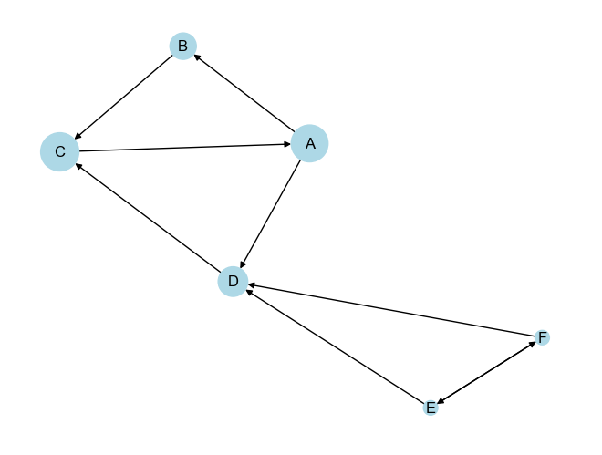
Interpretation of Output:
The PageRank algorithm has been applied to a directed graph where nodes and edges represent relationships (e.g., links between websites, connections in a network, etc.). Below is a detailed interpretation of both the graph and the PageRank values that were calculated in the provided output.
PageRank Scores:
- Node A (0.2827):
- Node A has the second-highest PageRank score. It is an important node in the cycle (A → B → C → A) and also has an outbound connection to D. The cycle A-B-C boosts its importance since it is connected to other central nodes.
- Node B (0.1451):
- Node B has a relatively lower PageRank compared to A and C. While it is part of the cycle, it doesn’t have any additional outbound connections like node A, which might reduce its importance compared to its neighbors.
- Node C (0.3031):
- Node C has the highest PageRank score, indicating it is the most central and influential node in the graph. This is likely because it not only participates in the cycle (A → B → C → A) but also receives an additional edge from node D, giving it more inbound influence.
- Node D (0.1821):
- Node D has a moderately high PageRank score, primarily because it is linked to the important cycle (via A and C). Although it is not part of the cycle, its proximity to influential nodes boosts its score.
- Node E (0.0435) and Node F (0.0435):
- Both E and F have the lowest PageRank scores. These nodes are peripheral in the network, with their primary connections being reciprocal links between themselves and links to node D. Since D is the only pathway for their influence, their importance is limited compared to other nodes directly involved in the central cycle.
Visual Representation:
In the provided graph (as visualized), node sizes are proportional to their PageRank scores:
Larger nodes (A, C, and D) are more important, with C being the largest node, reflecting its highest PageRank score.
Smaller nodes (E and F) are less influential and are positioned on the periphery, reflecting their lower PageRank.
Summary:
- Centrality of Cycle Nodes: Nodes A, B, and C form a strongly connected component (cycle), making them highly influential. C is the most central because it benefits from both the cycle and its connection to D.
- Peripheral Influence: Nodes E and F are peripheral and have limited influence because they rely on node D to connect to the rest of the network.
- Node D’s Role: Node D plays an intermediary role between the central cycle and the peripheral nodes E and F, making it somewhat important, though not as central as nodes in the cycle itself.
The graph and PageRank scores together show how the structure of a network determines the relative importance of each node, with highly interconnected cycles typically having the most influence.